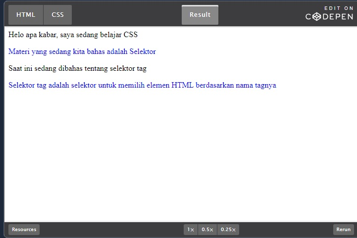
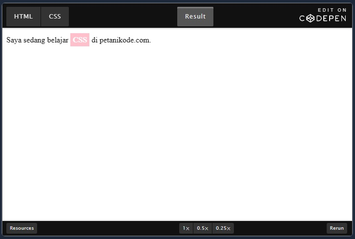
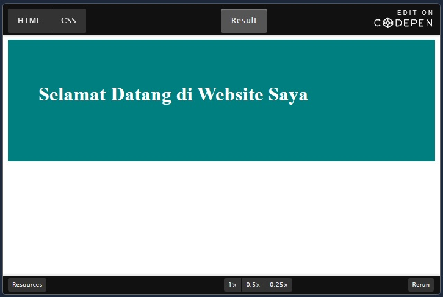
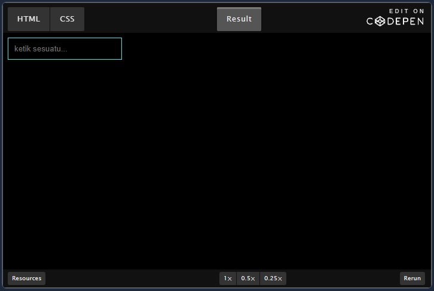
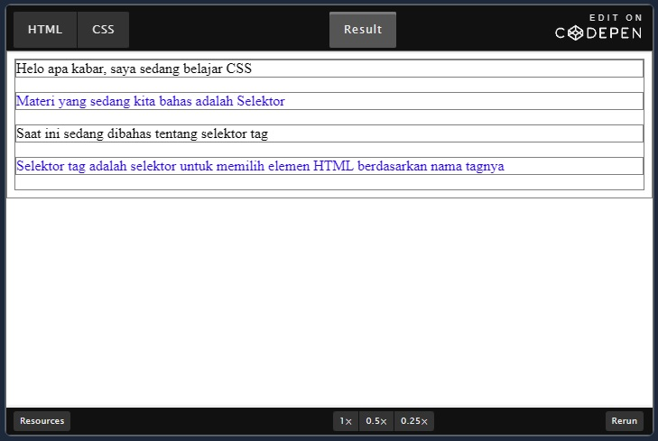

Hal dasar yang harus kita ketahui setelah memahami cara menulis HTML di CSS adalah selektor. Selektor adalah katakunci dan simbol yang digunakan pada CSS untuk menyeleksi atau memilih elemen HTML.
Ada 5 macam selektor di CSS:
- Selektor Tag
- Selektor Class
- Selektor ID
- Selektor Atribut
- Selektor Universal
Selektor Tag
Selektor Tag disbut juga Type Selector. Selektor ini akan memilih elemen berdasarkan nama tag.
Contoh :
p{
color: blue;
}
Artinya: Pilih semua elemen <p> lalu atur warna teksnya menjadi biru. Kalau misalnya kita punya struktur HTML seperti ini:
<div>Helo apa kabar, saya sedang belajar CSS</div>
<p>Materi yang sedang kita bahas adalah Selektor</p>
<div>Saat ini sedang dibahas tentang selektor tag</div>
<p>Selektor tag adalah selektor untuk memilih elemen HTML berdasarkan nama tagnya</p>
Maka akan menghasilkan output seperti ini :
Semua elemen <p> berwarna biru, sedangkan <div> tidak.
Selektor Class
Selektor class adalah selektor yang memilih elemen berdasarkan nama class yang diberikan. Selektor class dibuat dengan tanda titik di depannya.
Contoh:
pink {
color: white;
background: pink;
padding: 5px;
}
Kita memiliki selektor class beranam .pink. Nah cara menggunakan selektor ini di HTML adalah dengan menambahkan atribut class di dalamnya. Contoh:
Saya sedang belajar <strong class="pink">CSS</strong> di petanikode.com.
Maka akan menghasilkan output seperti ini :
Selektor class dapat kita gunakan pada elemen yang kita inginkan. Sebuah elemen HTML dapat menggunakan satu atau lebih class.
Selektor ID
Selektor ID hampir sama dengan class. Bedanya, ID bersifat unik. Hanya boleh digunakan oleh satu elemen saja. Selektor ID ditandai dengan tanda pagar (#) di depannya. Contoh
#header {
background: teal;
color: white;
height: 100px;
padding: 50px;
}
Lalu pada kode HTML
<header id="header">
<h1>Selamat Datang di Website Saya</h1>
</header>
Maka akan menghasilkan output seperti ini :
Selektor Atribut
Selektor atribut adalah selektor yang memilik elemen berdasarkan atribut. Selektor ini hampir sama seperti selektor Tag.
Contoh selektor Atribut:
input[type=text] {
background: none;
color: cyan;
padding: 10px;
border: 1px solid cyan;
}
Artinya kita akan memilih semua elemen <input> yang memiliki atribut type='text'.
Contoh kode HTML:
<input type="text" placeholder="ketik sesuatu..." />
Maka akan menghasilkan output seperti ini :
Selektor Universal
Selektor universal adalah selektor yang digunakan untuk menyeleksi semua elemen pada jangkaua (scope) tertentu.
Contoh:
* {
border: 1px solid grey;
}
Artinya semua elemen akan memiliki garis solid dengan ukuran 1px dan berwarna grey.
Hasilnya:
Selektor universal bisanya digunakan untuk me-reset CSS.
Kenapa harus di-reset?
Pada halaman HTML, ada beberapa CSS bawaan browser seperti padding dan margin pada elemen tertentu. Reset bertujuan untuk menghilangkan padding dan margin tersebut.
Contoh CSS reset:
* {
padding: 0;
margin: 0;
}
Maka semua elemen tidak akan memiliki padding dan margin.